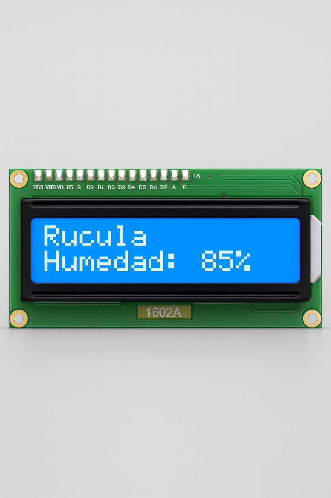

Automatic irrigation · Wi-Fi · Species profiles
Make your plants thrive with RootCare
Greenhouse prototype with pulse irrigation, moisture sensor, and ESP8266 control. Optimizes water use, reduces operational friction, and simplifies care in apartments and micro-farming.
Water use
Only when requiredPulse irrigation with moisture threshold.
Control
Wi-Fi + LCDSimple web UI + on-screen feedback.
Profiles
By plant typeParameters tailored by species.
Challenge: compact cities and water crisis
Urbanization → apartments without yards. Global water crisis that in Chile affects ≈76% of the territory. Consumption priorities shift to health, sustainability, and home gardens.
Limited space
Apartments dominate housing. Traditional gardening does not fit.
Irrigation efficiency
Water is critical. Precision and “only when needed” triggering are required.
Consumer habits
Higher demand for fresh food and stress-relief activities like growing.
Solution: RootCare
Compact greenhouse prototype with automated pulse irrigation. Designed by UA Industrial Engineering students with faculty guidance. Focused on low cost and scalability.
Water savings
Irrigates only when the soil asks for it. No overwatering.
Better growth
Stable moisture = healthy roots + controlled water stress.
Simple operation
Per-plant profiles and remote monitoring. Zero learning curve.
Ready to iterate
Modular architecture: sensor → logic → actuator.
Prototype stack
- ESP8266 with Wi-Fi as the brain.
- Soil moisture sensor for decisions.
- Pulse irrigation controlled by relay/valve.
- 1602 LCD for local status.
- Web UI to select species.
Low cost
Scalable
Plug-and-play
How it works
1
Read moisture
Real-time sensor defines whether irrigation is needed.
2
Plant profile
Configurable thresholds per species.
3
Decision on ESP8266
Wi-Fi connectivity and control logic.
4
Pulse irrigation
Activates valve/relay only for the necessary seconds.
5
Feedback
LCD and web UI report live status.
Automatic irrigation
Control around the optimal moisture point. Less water. Healthier roots.
Web Interface (placeholder)
Tip: replace this card with a screenshot of your real UI (./assets/ui-web.png).
Evidence of need
Local survey (n≈50)
- High demand for automatic irrigation.
- Explicit interest in remote monitoring.
- Drivers: fresh food and convenience.
Trend aligned with the global shift toward health and sustainability.
Practical benefit
- Less time spent on manual care.
- Lower risk of over/under-watering.
- Higher success rate in small spaces.
Apartment-friendly
Urban gardens
Small-scale farming
Target audience
Busy Urban Dwellers
People in apartments with little time. They want automation and zero friction.
Small-scale Farmers
Producers at smaller scale who need reliability and water savings.
Interfaces

LCD screen
Status: moisture, active profile, and irrigation events.

RootCare App
Plant selection, moisture reading, and manual control.
Prototype assembly
Build steps
- Install the moisture sensor halfway into the substrate.
- Connect the valve/relay to the irrigation line and to the power source.
- Mount the ESP8266 and wire sensor + relay per the diagram.
- Power the system and check initial status on the LCD.
- From the web UI, select the plant profile and test pulse irrigation.

Prototype in action
Meet our team
 Mathias Deumacán
Mathias DeumacánLeader
 Juan Manuel Andrade
Juan Manuel AndradeBuilder
Gianfranco Bano
Commercial Manager
 Joaquín Llancaleo
Joaquín LlancaleoPrototype Designer
 Francisco Ruiz
Francisco RuizCode & App Designer
Want the full interactive version?
Book a demo. We will show the pulse irrigation flow and the sensor setup.